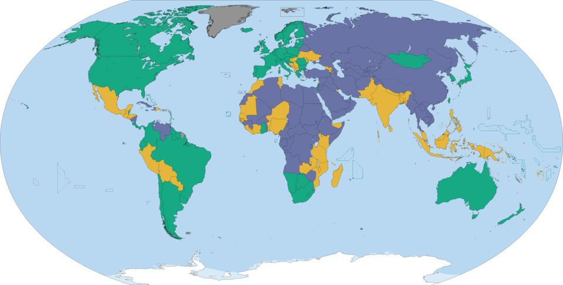

Freedom in the World Report
Der jährliche Bericht von Freedom House bewertet den Stand politischer Freiheiten und bürgerlicher Rechte.
Excellence Features:
- Interaktive Leaflet-Karte mit benutzerdefinierten Markern und Popups
- Marker-Icons wechseln Größe bei Hover/Klick (kein Springen)
- Rechteck für Europa in beiden Karten
- Responsive Images (Lecture 5) via
srcsetundsizes
Globaler Freiheitsindex 2023

Legende
- Frei
- Teilweise frei
- Nicht frei
- Europäischer Kontinent
Politische Freiheit in Europa
Übersicht der Länder mit Freiheitswerten (2023)
Die folgende Tabelle listet alle europäischen Länder mit ihrem Freiheitsscore (0–100) und dem Status laut Freedom House Report 2023:
- Albanien – 61 – teilweise frei
- Andorra – 95 – frei
- Armenien – 64 – teilweise frei
- Österreich – 92 – frei
- Aserbaidschan – 23 – nicht frei
- Belgien – 90 – frei
- Bosnien-H. – 67 – teilweise frei
- Bulgarien – 81 – teilweise frei
- Dänemark – 98 – frei
- Deutschland – 94 – frei
- Estland – 95 – frei
- Finnland – 100 – frei
- Frankreich – 90 – frei
- Georgien – 60 – teilweise frei
- Griechenland – 88 – frei
- Großbritannien – 93 – frei
- Irland – 99 – frei
- Island – 100 – frei
- Italien – 89 – frei
- Kosovo – 71 – teilweise frei
- Kroatien – 88 – frei
- Lettland – 94 – frei
- Liechtenstein – 95 – frei
- Litauen – 95 – frei
- Luxemburg – 98 – frei
- Malta – 95 – frei
- Moldau – 62 – teilweise frei
- Monaco – 90 – frei
- Montenegro – 72 – teilweise frei
- Niederlande – 90 – frei
- Nordmazedonien – 71 – teilweise frei
- Norwegen – 100 – frei
- Polen – 78 – teilweise frei
- Portugal – 90 – frei
- Rumänien – 75 – teilweise frei
- Russland – 16 – nicht frei
- San Marino – 92 – frei
- Schweden – 94 – frei
- Schweiz – 99 – frei
- Serbien – 73 – teilweise frei
- Slowakei – 91 – frei
- Slowenien – 92 – frei
- Spanien – 89 – frei
- Tschechien – 89 – frei
- Türkei – 32 – nicht frei
- Ukraine – 60 – teilweise frei
- Ungarn – 69 – teilweise frei
- Weißrussland – 21 – nicht frei
- Zypern – 95 – frei
Datenquellen
Daten von Freedom House (Lizenz: CC-BY-NC-ND 4.0).
Hintergrund von BMN Network (Lizenz: CC-BY 2.0).